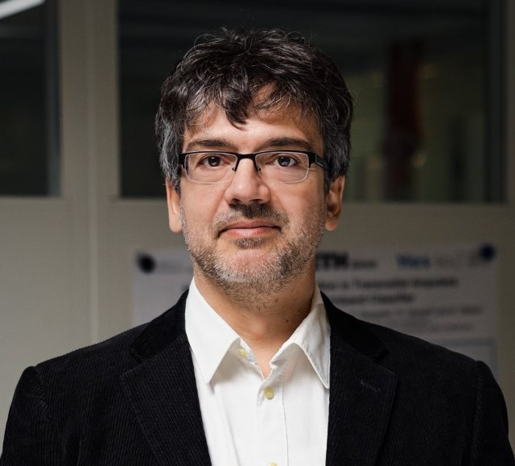

Gianluca Rizzo
Associate Professor of Computer Science, Dipartimento di Informatica, Università di Torino
Senior Research Associate, ConEx Lab, Human‑Centered AI Lab, HES-SO Valais-Wallis
I design and analyse distributed and wireless systems: how networks, devices and learning algorithms should be organised to be efficient, sustainable and dependable. My current work focuses on energy-aware 6G networks, mobile base stations and decentralised learning at the network edge, using stochastic geometry, mean-field theory, queueing models and network calculus.
- Università di Torino – Department of Computer ScienceVia Pessinetto 12, 10149 Torino, Italy · gianluca.rizzo [at] unito.itMy UniTo page
- HES-SO Valais-Wallis – Institute of InformaticsTechnopole 3, CH-3960 Sierre, Switzerland · gianluca.rizzo [at] hevs.chMy HES-SO Valais page · People@HES-SO profile

Research
News
Two journal papers accepted: “Modeling and Optimization of Vehicular-Enhanced Urban RANs with In-Band Backhaul” in IEEE Transactions on Vehicular Technology, and “An Energy-Aware Multi-Domain Orchestration Architecture for Sustainable 6G Networks”, the journal version of our WONS 2026 paper (UNITY-6G), in Computer Communications.
“Floating Gossip: Serverless Distributed Learning in Dynamic Scenarios” is published in IEEE Transactions on Mobile Computing.
Papers presented at ICAPS 2026 on robust decentralised multi-agent planning and at EuCNC & 6G Summit 2026 on the UNITY-6G architecture.
I was General Chair of IEEE WONS 2026, held in Crans-Montana, Switzerland, on 2–4 March.
Best Paper Award runner-up at IEEE SmartIoT 2025 (Sydney) for our paper on energy-aware load shifting in SWIPT IoT networks.
I joined the Department of Computer Science of the Università di Torino as Associate Professor.